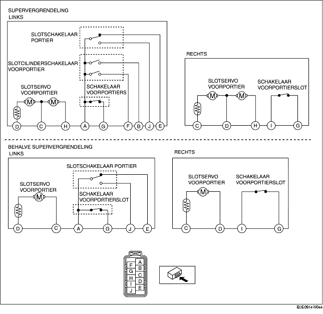

CONTROLE SLOTMECHANISME EN SLOTSERVO VOORPORTIER
B3E091458490W04
1. De volgende servo's en schakelaars zijn geïntegreerd in het slotmechanisme en de slotservo van het voorportier. Controleer het slotmechanisme en de slotservo aan de hand van de controleprocedure voor de volgende onderdelen.
-
• Slotservo voorportier (Zie CONTROLE SLOTSERVO VOORPORTIER.)
-
• Schakelaar voorportierslot (Zie CONTROLE SCHAKELAAR VOORPORTIERSLOT.)
-
• Slotcilinderschakelaar voorportier (bestuurderszijde) (Zie CONTROLE SLOTCILINDERSCHAKELAAR VOORPORTIER.)
-
• Slotschakelaar (bestuurderszijde) (Zie CONTROLE SLOTSCHAKELAAR PORTIER.)
